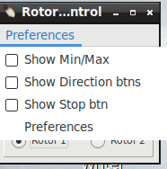
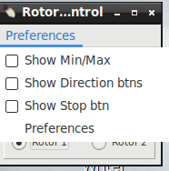

|
WARNING! Backup your data often! BACKUP your log directory at the end of EVERY session! All that you need to backup and store in a safe place is the log database directory located in the ~/.config/cqrlog/database folder, or you can enable the autobackup function in Preferences. This autobackup function creates an ADIF file with a backup of your log. /td> |
| [Menu] |


TRX Control window Shows current frequency and buttons allow change of Band, mode, memory and rig. Additional selections are User defined buttons, Power buttons, Vfo A and B buttons and memory information field.
When pressing band selection button rig moves to that band using predefined frequency of currently active mode. Default frequencies and User buttons can be defined in preferecences/TRX control.
You can select rig vfo with buttons A and B but there is no feedback what vfo is currenty used as Icom brand rigs do not support "Get_vfo" command.
If M_up or M_dwn are pressed or memory is selected by double click of memory list, the information text will show up to Mem Info field. If frequency is changed manually after that info text will disappear.
If memory does not have info text (max 25chr) just x of y is displayed where x refers to memory order in Add/Modify memory list and y total amount of memories.
None (in red) indicates that there are no memory lines.
With P-on/off/stb buttons current rig can be set ON, OFF or STANDBY (if it supports rigctld power commands).
Default setting for power buttons is hidden. You can change it via dropdown menu "Preferences".
M_up and M_dwn buttons select next/previous entry from memory list. M_Wri adds entry to memory list from current rig frequency and mode and info field shows "MW ok".
NOTE!!!
Check pereferences/TRXcontrol/Switch only between mode related memories
Cqrlog TRXcontrol memories are categorized by mode (groups). CW, SSB(=AM+USB+LSB+FM), RTTY(=RTTY+DATA+PKTLSB+PKTUSB+PKTFM)[no mode selector for PKT* but you may "M wri" them anyway].
So do not wonder if you get smaller amount of memories than in your list when pressing M_up and M_dwn with "Show mode related" checked.


You can set rig by double click of an memory row in Open memory list. Similar action happen also in Add/Modify memories. The differense is that you can keep
Open memory list open while loggeing qsos etc. Where as Add/Modify memories, when open, blocks other functionality.
While Add/Modify memories is open you can use buttons in right frame. Texts of buttons are quite self explaining.
Deleting a memory line, or all lines, do not have any further warning questions (Are you sure?). In case you deleted something wrong just close window with Cancel. No changes are recorded then.
Closing Add/Modify memories is done with buttons OK or Cancel. Closing Open memory list window must be done using x at top right corner of window.
Open memory list closes also if Add/Modify memories is opened. They can not be open at same time.
If you make changes to preferences/TRXControl after that just select another radio (even if not existing) from radio buttons Radio 1 , Radio 2. Then select back the previous radio and new values are read. It is possible also reload settings from NewQSO/File/Refresh TRX/ROT control.
See also setting up TRX/ROTControl
From NewQSO/Window you can open Rotor control window.

 


Progress bar displays Az value relative to AzLimits (if Use \dump_state is checked in preferences) so do not wonder if it in some cases may look different than numerical true direction display.
If error message is received from rotctld button area turns red. If requested turn command is ok, but az_min or az_maz limits change requested direction from true direction
(then antenna may not always reach requested direction) button area will turn yellow as warning sign.
The length of color flash depends on poll rate and is error permanent or not.
If you make changes to preferences/Rot Control after that just select another rotor (even if not existing) from radio buttons Rotor 1 , Rotor 2. Then select back the previous rotor and new values are read. It is possible also reload settings from NewQSO/File/Refresh TRX/ROT control.
See also setting up TRX/ROTControl
| [Menu] |